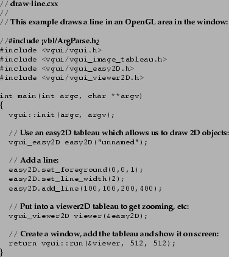

Next: Displaying images and 2D
Up: Displaying images and 2D
Previous: Displaying an image
In order to display 2D objects we need to use a different tableau called vgui_easy2D.
This tableau has functions which allow us to draw points, lines and other geometric
objects. As in the previous example we include this into a 2D viewer tableau.

Target Junior User
2000-10-31